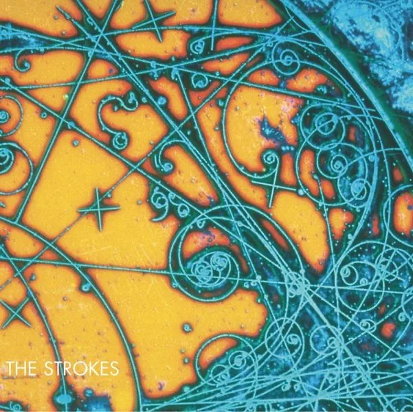
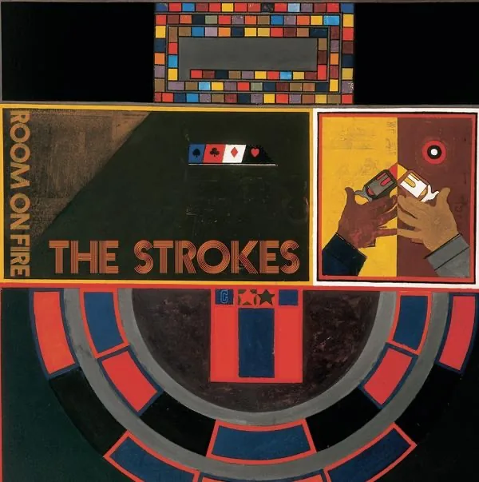
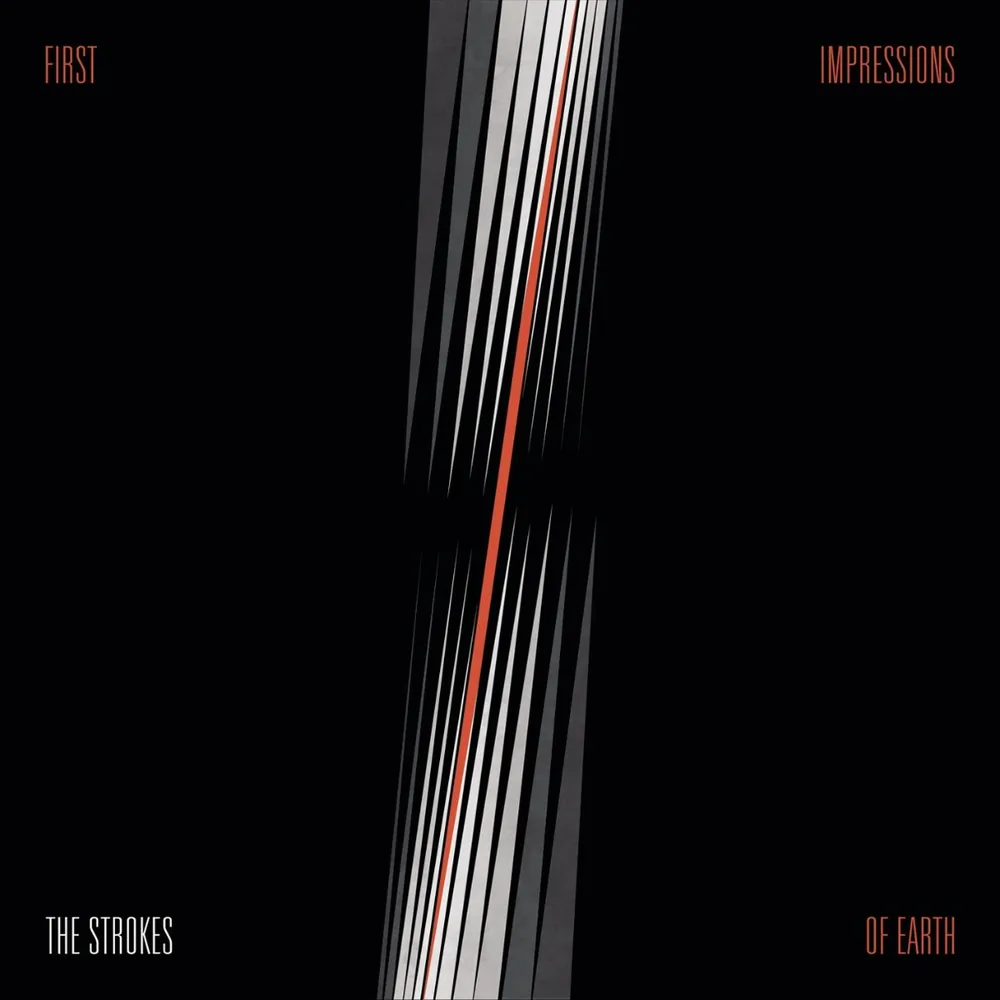
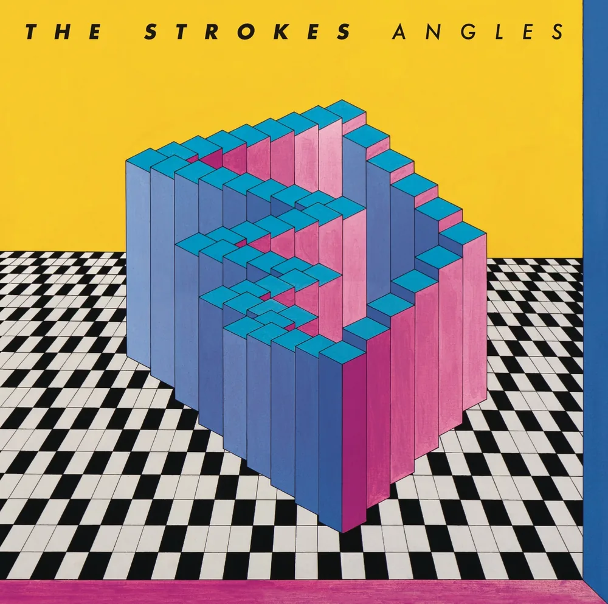
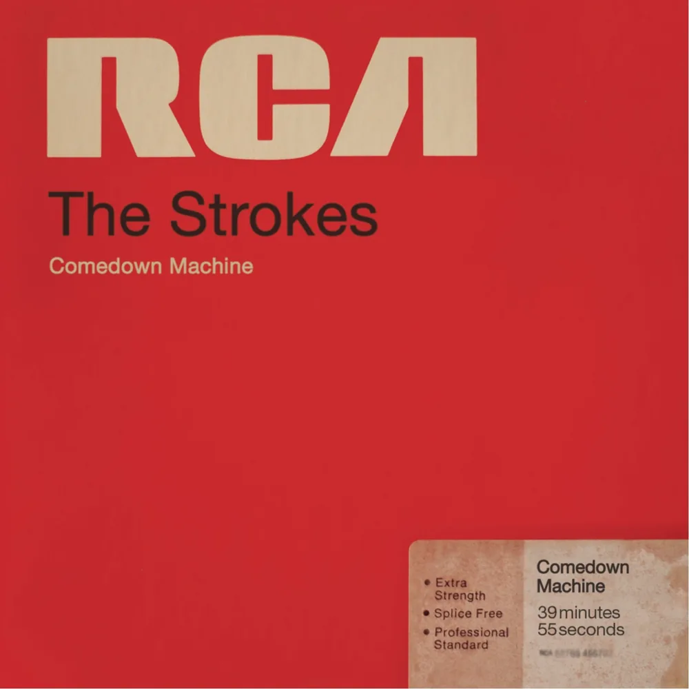
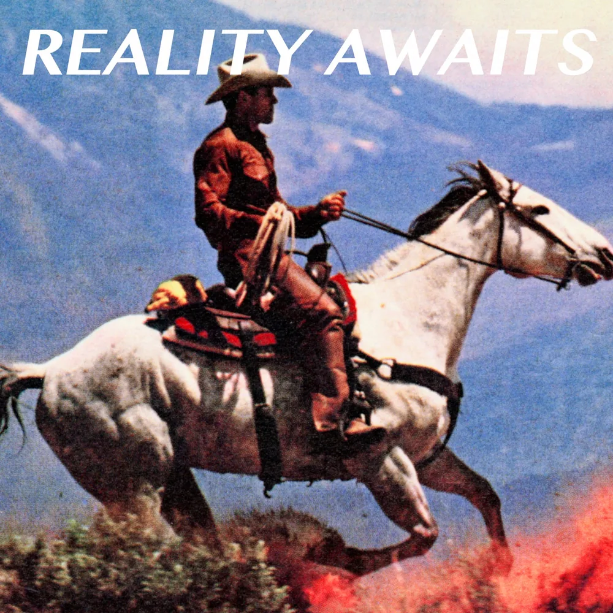

The album that started it all, a lo-fi record that defined a generation of indie rock.

"The Empire Strikes Back" to "Is This It"'s "A New Hope", a worthy successor whose only fault was being as good as the original.

A change of pace from the previous two albums, a rebirth of sorts that gave us first impressions of the band beyond "Is This It" and "Room on Fire".

Their most adventurous album yet, a far cry from all that came before it, but not in a bad way.

A masterpiece or a mistake, depending on who you ask. The culmination of a 5-album lock-in to RCA.
A return to form seven years in the making, marking The Strokes' first Grammy win.

A new direction, with echoes of Julian Casablancas' side project, The Voidz.